STEP 04
URL 에서 컴포즈 가져오기
컴포즈 드롭다운의 3가지 옵션 중 <strong>URL 에서 컴포즈 가져오기</strong> 를 선택합니다. 이 저장소의 Raw URL 을 붙여넣기만 하면 됩니다.
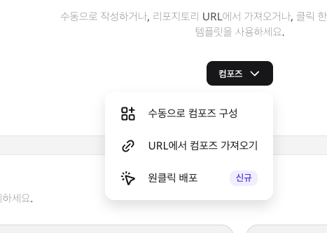
컴포즈 드롭다운 — 가운데 URL 에서 컴포즈 가져오기 선택.
https://raw.githubusercontent.com/dandacompany/hermes-paperclip-on-hostinger/main/docker-compose.console.yml
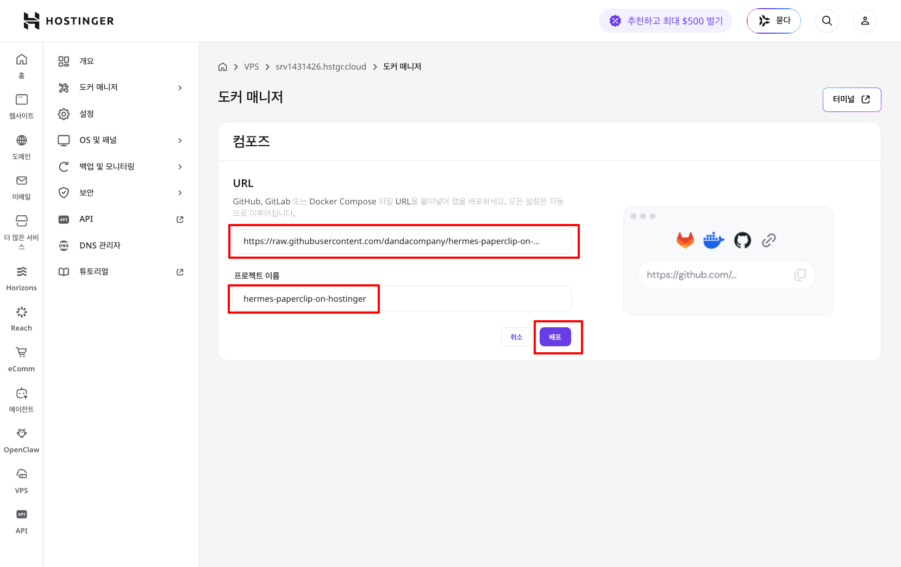
URL · 프로젝트 이름 입력 후 배포 버튼 — 빨간 박스 위치 그대로 따라 입력.
STEP 06
Deploy + 컨테이너 상태 확인
Deploy 후 Docker Manager 에 컨테이너 카드 6장이 뜹니다. 4장은 Running, 2장은 Exited 가 정상 상태입니다.
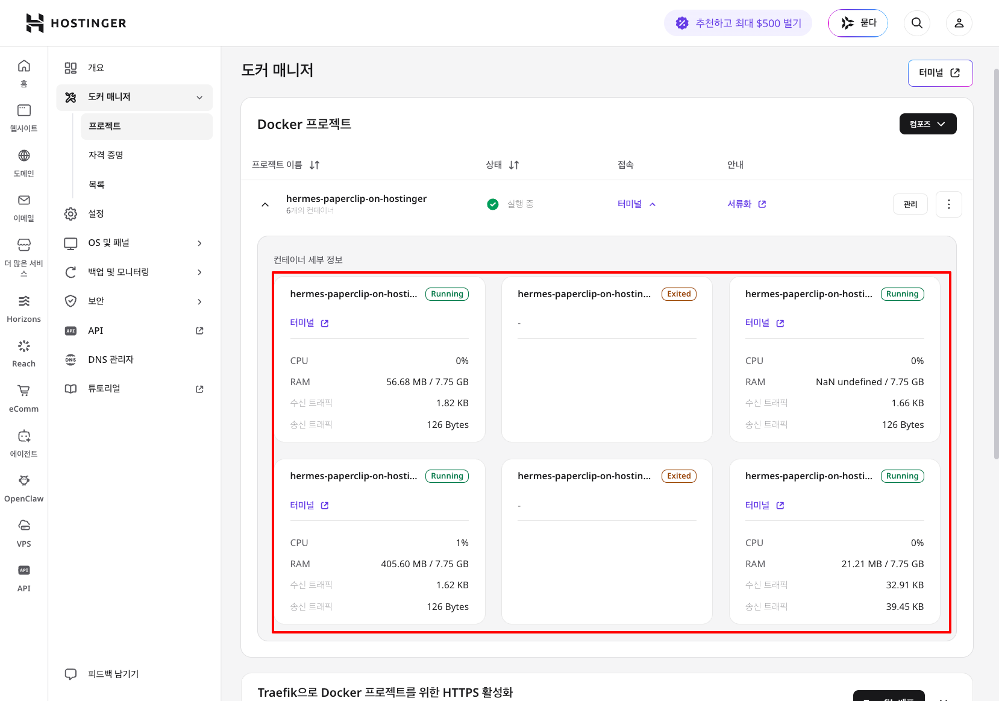
컨테이너 카드 6 장 — 빨간 박스 안의 Running 4 개와 Exited 2 개 (init 컨테이너가 초기화 작업 후 자동 종료된 상태). Exited 옆에 음수 종료 코드가 없다면 정상.
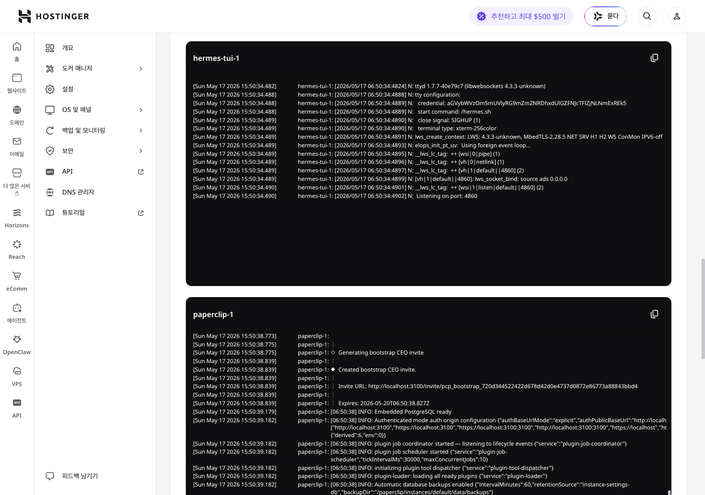
컨테이너 카드의 터미널/Logs 버튼으로 본 부팅 로그. 위 hermes-tui 의 ttyd 4860 LISTEN, 아래 paperclip 의 bootstrap CEO invite URL · PostgreSQL ready · plugin coordinator 시작.
STEP 07
메시 FQDN 확인 + 세 인터페이스 접속
Tailscale admin 콘솔에서 노드 도메인을 확정하고, 같은 tailnet 멤버 디바이스에서 Hermes · Paperclip · TUI 세 인터페이스를 차례로 엽니다.
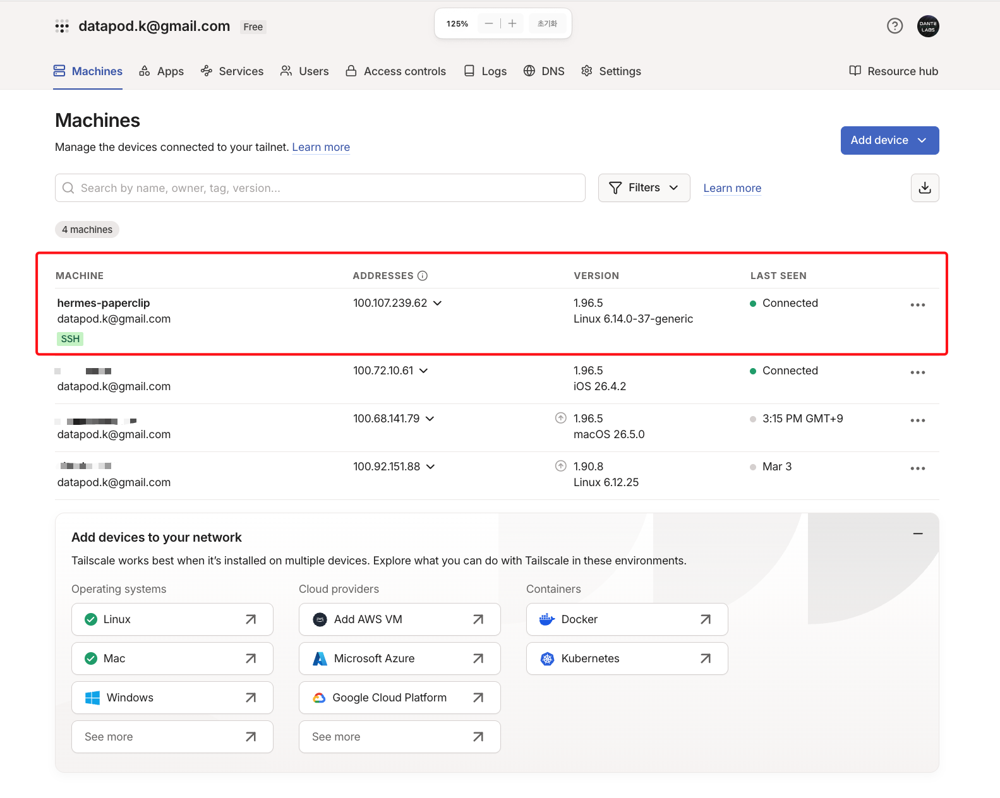
Tailscale admin → Machines 의 머신 목록. 빨간 박스의 hermes-paperclip 행이 우리 사이드카 노드 (datapod.k@gmail.com 소유, 100.107.239.62, Linux, Connected).
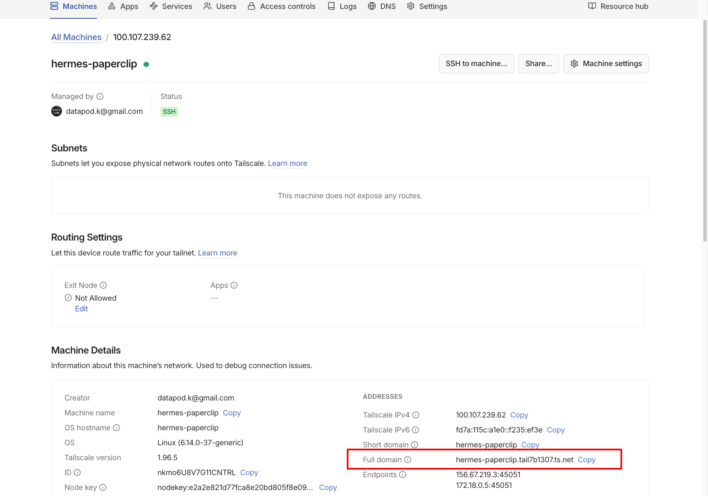
hermes-paperclip 상세 페이지의 Machine Details — 빨간 박스의 Full domain 값(hermes-paperclip.tail7b1307.ts.net)이 이후 단계에서 쓰는 메시 호스트명.
| 인터페이스 | 메시 URL | 첫 진입 인증 |
|---|
| Hermes Dashboard | https://<Full-domain>:9119 | 별도 로그인 없음 (Hermes 자체 세션 토큰) |
| Hermes TUI | https://<Full-domain>:4860 | Basic Auth: hermes / ADMIN_PASSWORD |
| Paperclip | https://<Full-domain>:3100 | 첫 접속은 invite URL 로 admin 등록 (07-5 참고), 이후 sign-in |
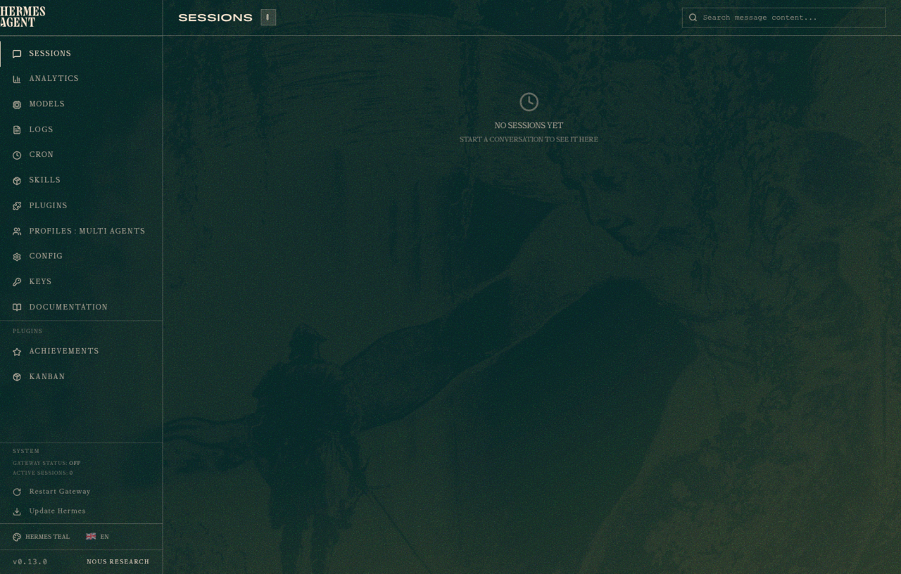
Hermes Dashboard 메인 — 왼쪽 사이드바의 풀 메뉴, 가운데 Sessions 탭 (NO SESSIONS YET 안내), 하단 System 패널 (Gateway Status · Active Sessions).
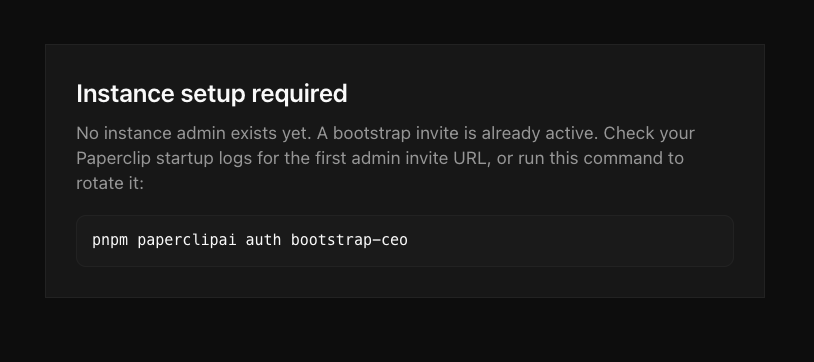
Paperclip Instance setup required 안내. 화면이 표시하는 명령은 'pnpm paperclipai auth bootstrap-ceo' 지만 Hostinger 이미지에선 'pnpm' 접두사 없이 'paperclipai auth bootstrap-ceo' 만 입력합니다 (다음 단계 참고).
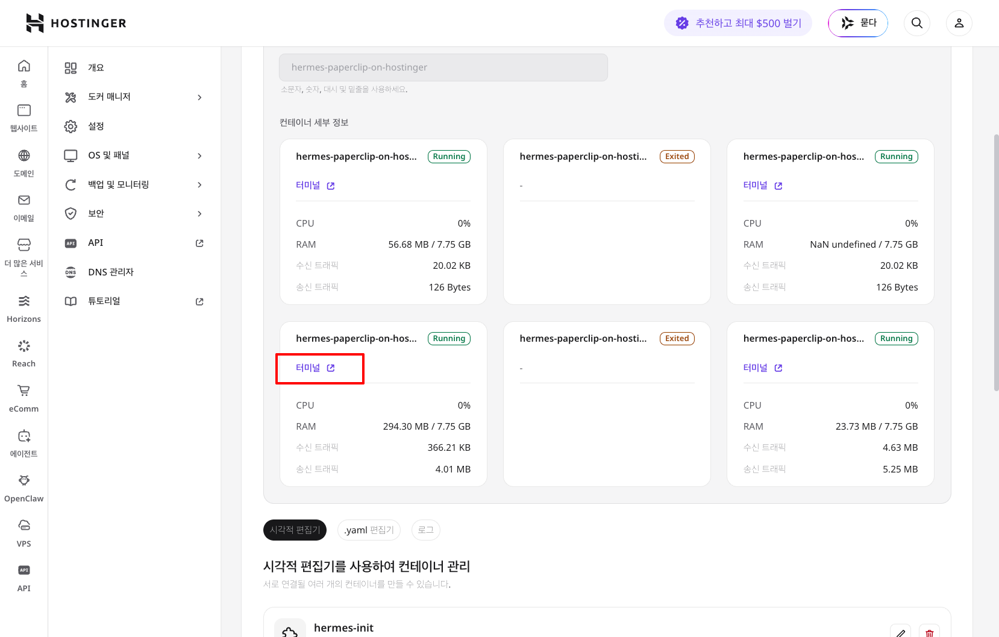
컨테이너 카드 목록에서 paperclip 카드의 빨간 박스로 강조된 '터미널' 링크 — 클릭하면 컨테이너 안의 shell 이 새 탭으로 열림.
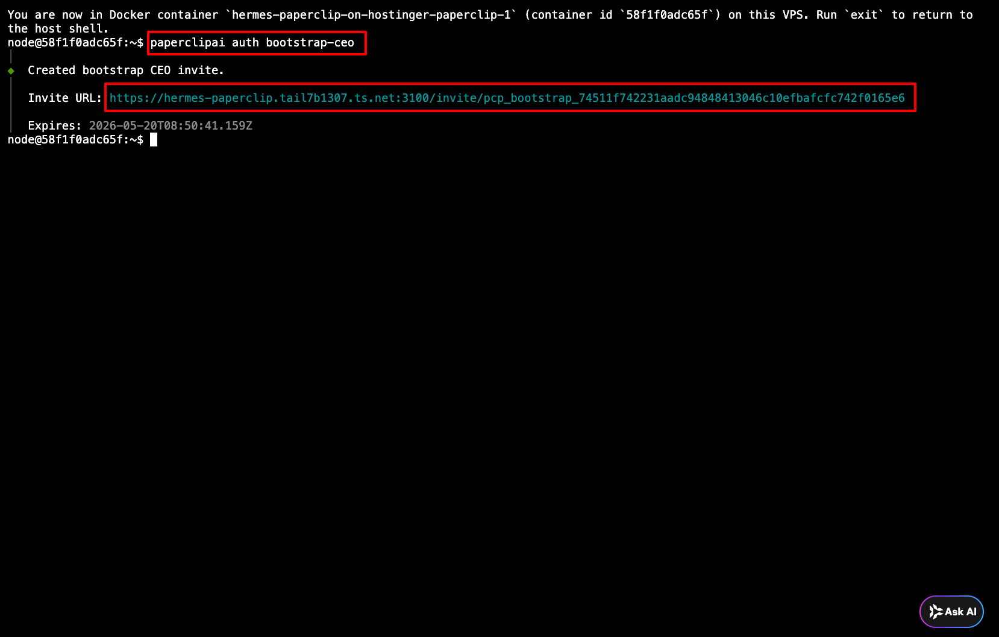
콘솔 터미널 안 — 빨간 박스 위는 입력한 명령 (paperclipai auth bootstrap-ceo), 빨간 박스 아래는 새 Invite URL (메시 Full domain 포함). Expires 시각도 같이 표시.
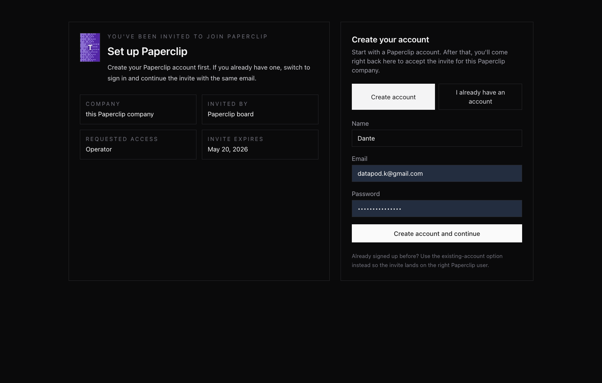
invite URL 진입 후 Set up Paperclip / Create your account 두 컬럼 — 좌측 invite 메타데이터, 우측 가입 폼.
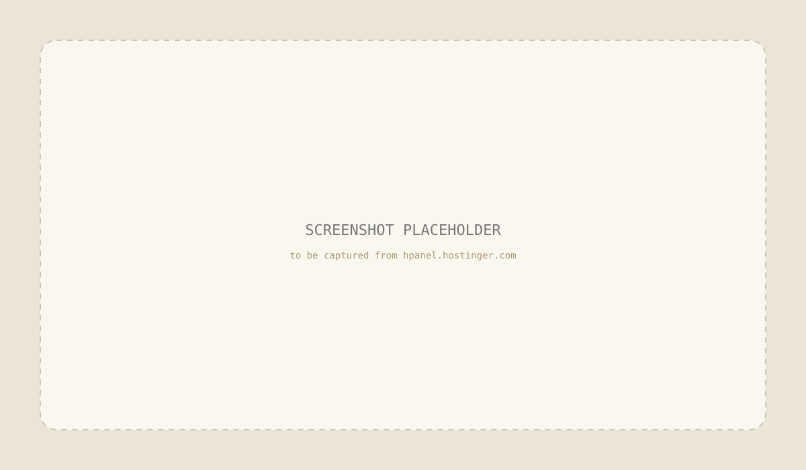
PLACEHOLDER · 15-paperclip-workspace.png
가입 완료 후 Paperclip 워크스페이스 메인 또는 sign-in 페이지.
STEP 08
Hermes · Paperclip 첫 사용 + 운영
두 시스템 모두 자체 로그인을 가지고 있습니다. 첫 셋업과 자주 쓰는 운영 동작을 정리합니다.
| 작업 | 콘솔 동작 |
|---|
| 재시작 | Docker Manager → 프로젝트 → Restart |
| 개별 컨테이너 재시작 | 컨테이너 카드의 Restart 버튼 |
| 로그 보기 | 컨테이너 카드의 Logs 버튼 |
| 환경변수 변경 | 프로젝트의 Environment 탭에서 수정 → Save → Restart |
| 이미지 업데이트 | 프로젝트의 Update 또는 Pull 버튼 (Pull 후 Restart) |
| 비밀번호 회전 | ADMIN_PASSWORD 새 값 입력 → Save → hermes-tui · paperclip 재시작 |
| 완전 정리 (데이터 포함) | 프로젝트의 Delete (Down with volumes 옵션 선택) |